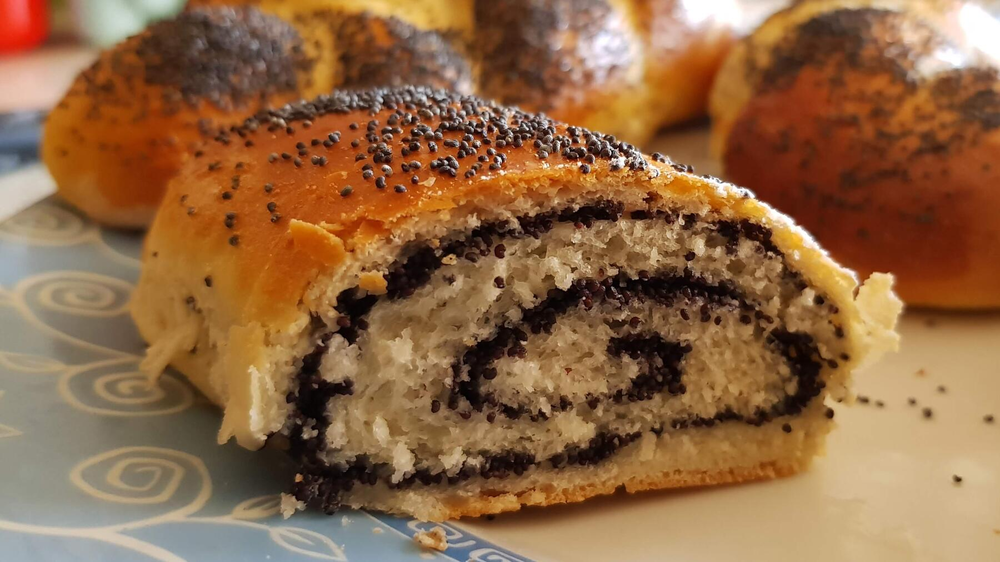

Zurück zur Übersicht
Mohnschnecken mit Cashew-Cranberry
Hefeschnecken mit fertiger Mohnfüllung und gehacktem Cashew-Cranberry-Mix, zum Schluss mit Zitronenglasur. Eine Portion entspricht einer Schnecke.
- Zeit
- 2 Std. 30 Min.
- Schwierigkeit
- mittel
- Kategorie
- Süßgebäck
- Ernährung
- vegetarisch
Zutaten
Portionen
Für den Hefeteig
- 500 gMehl
- 42 gfrische Hefe (1 Würfel)
- 250 mlMilch, lauwarm
- 75 gZucker
- 1 PriseSalz
- 75 gButter, weich
- 1Ei
Für Füllung und Glasur
- 100 gCashew-Cranberry-Mix
- 250 gMohnback (backfertige Mohnfüllung)
- ½Zitrone
- 150 gPuderzucker
Zubereitung
- Für den Hefeteig die Milch in einem kleinen Topf nur lauwarm erwärmen, sie sollte sich am Finger angenehm warm anfühlen (etwa 37 °C), heißer verträgt die Hefe nicht. Die Hefe hineinbröckeln, 1 TL vom Zucker dazugeben und rühren, bis sich die Hefe aufgelöst hat. 5–10 Minuten stehen lassen, bis sich kleine Bläschen bilden.
- Das Mehl in eine große Schüssel geben und mit dem restlichen Zucker und dem Salz mischen. Hefemilch, weiche Butter in Flöckchen und das Ei dazugeben. Mit den Knethaken des Handmixers erst auf niedriger, dann auf höchster Stufe etwa 5 Minuten kneten, bis der Teig glatt ist und sich vom Schüsselrand löst. Klebt er noch stark, esslöffelweise etwas Mehl einarbeiten.
- Den Teig zu einer Kugel formen, die Schüssel mit einem sauberen Küchentuch abdecken und den Teig an einem warmen Ort etwa 1 Stunde gehen lassen, bis sich sein Volumen ungefähr verdoppelt hat.
- Den Cashew-Cranberry-Mix klein hacken.
- Den Teig mit bemehlten Händen aus der Schüssel nehmen und auf einer leicht bemehlten Arbeitsfläche zu einem Rechteck (ca. 40 × 20 cm) ausrollen. Mit der Mohnfüllung bestreichen und mit dem Cashew-Cranberry-Mix bestreuen. Von der langen Seite her aufrollen.
- Die Rolle in 12 gleich breite Scheiben schneiden und hochkant auf ein mit Backpapier belegtes Backblech setzen. Die Oberseite mittig mit einem Kochlöffelstiel fest eindrücken. Mit einem sauberen Tuch abdecken und 15 Minuten gehen lassen.
- Bei 160 °C Umluft (180 °C Ober-/Unterhitze) auf der unteren Schiene 20–25 Minuten backen und lauwarm abkühlen lassen.
- Die Zitrone auspressen. Den Puderzucker mit 2–3 EL Saft zu einer dünnen Glasur verrühren und auf den Mohnschnecken verteilen.
Tipp: Ist die Glasur zu sauer, den Zitronensaft teilweise oder ganz durch Wasser ersetzen.
Hinweis: Das Heft verweist für den Hefeteig auf eine eigene Seite, die nicht im Ordner liegt. Hier steht deshalb ein klassischer süßer Hefeteig in passender Menge.